Microsoft PowerPoint
Setelah mempelajari materi ini, peserta didik diharapkan mampu:
Microsoft PowerPoint adalah salah satu aplikasi dari Microsoft Office yang digunakan untuk membuat dan menampilkan presentasi. Dengan PowerPoint, kita bisa menyampaikan informasi kepada orang lain secara menarik melalui slide yang berisi teks, gambar, grafik, dan animasi.
Menurut KBBI, presentasi berarti menyampaikan, menyajikan, dan mengemukakan informasi kepada seseorang.
Berikut ini adalah bagian-bagian utama yang tampak saat kamu membuka PowerPoint:
| Bagian | Lokasi | Kegunaan Singkat |
|---|---|---|
| Title Bar | Atas tengah | Menampilkan nama file |
| Quick Access Toolbar | Pojok kiri atas | Simpan, Undo, Redo |
| Ribbon | Bawah title bar | Tab menu utama (Home, Insert, dll.) |
| Slide Panel | Kiri | Navigasi antar slide |
| Area Slide | Tengah | Tempat membuat & mengedit slide |
| Scroll Bar | Kanan/bawah | Menggeser tampilan |
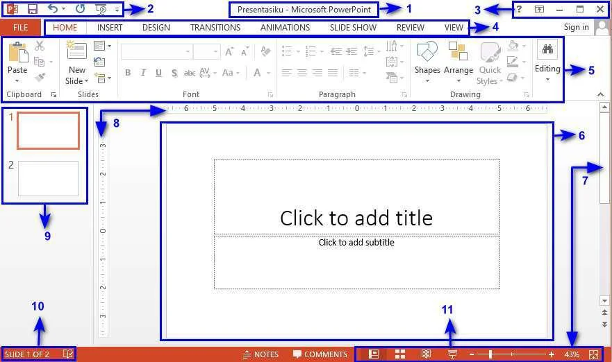
Tampilan antarmuka Microsoft PowerPoint
| No | Nama Fitur | Fungsinya |
|---|---|---|
| 1 | Title | Menampilkan nama dokumen yang sedang dibuka |
| 2 | Quick Access Toolbar | Berisi tombol cepat: Simpan, Undo (batal), dan Redo (ulangi) |
| 3 | Window Management | Tombol untuk memperkecil, memperbesar, atau menutup jendela |
| 4 | Ribbon | Kumpulan tab menu utama: Home, Insert, Design, Transition, Animations, Slide Show, dll. |
| 5 | Group Ribbon | Kelompok perintah di dalam tab, seperti: Slide, Font, Paragraph, Drawing |
| 6 | Slide Area | Area utama untuk membuat dan mengedit isi slide |
| No | Nama Fitur | Fungsinya |
|---|---|---|
| 7 | Scroll Bar | Menggeser tampilan layar ke atas, bawah, kiri, atau kanan |
| 8 | Ruler | Penggaris digital untuk menyesuaikan posisi objek secara presisi |
| 9 | Slide Navigation | Menunjukkan slide mana yang sedang aktif/dipilih |
| 10 | Slide Number | Menampilkan jumlah total slide yang sudah dibuat |
| 11 | Page View | Tombol untuk mengubah tampilan: Normal, Baca, atau Zoom |
Langkah-langkah membuat slide baru:
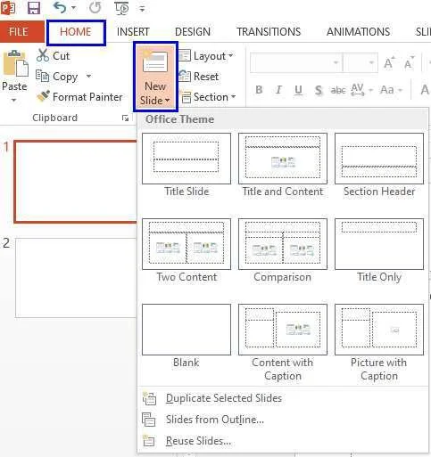
Tampilan menu New Slide di PowerPoint
Design pada PowerPoint digunakan untuk memperindah tampilan slide dengan memilih tema atau latar belakang yang menarik. Setelah selesai mengetik isi presentasi, kamu bisa langsung memilih design yang diinginkan.
Cara menerapkan Design:
| Kondisi | Tampilan Slide |
|---|---|
| Sebelum Design | Latar putih polos, teks biasa, kurang menarik |
| Sesudah Design | Ada tema warna, latar belakang dekoratif, lebih profesional |
SEBELUM DESIGN:
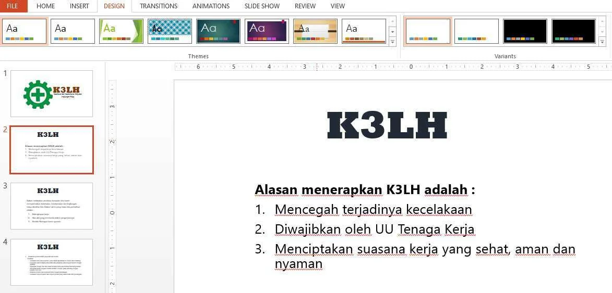
Slide tampak polos tanpa tema
SESUDAH DESIGN:
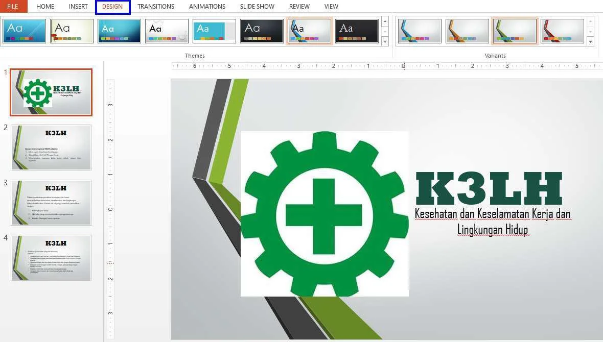
Slide tampak lebih menarik setelah diberi tema
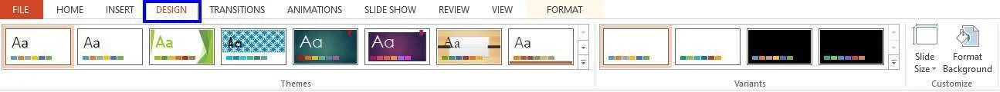
Tampilan tab Design pada Ribbon PowerPoint
Yang bisa kamu lakukan di tab Design:
Pilih tema tampilan slide (warna, font, gaya)
Variasi warna dari tema yang sudah dipilih
Atur ukuran slide dan format latar belakang sendiri
Apa itu Transisi?
Transisi adalah animasi yang muncul saat perpindahan dari satu slide ke slide berikutnya. Tujuannya agar presentasi tidak terlihat kaku dan membosankan.
Cara menambahkan transisi:
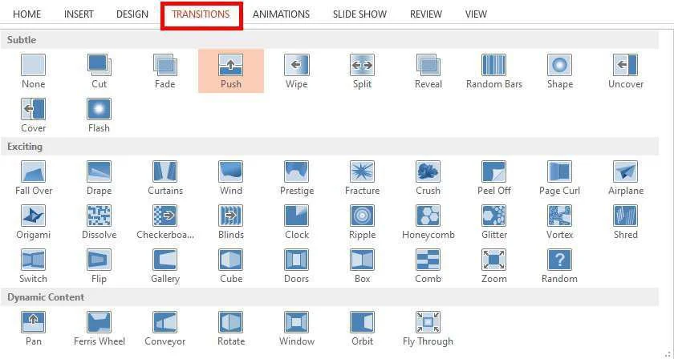
Tampilan tab Transition pada Ribbon
Effect Options & Timing:
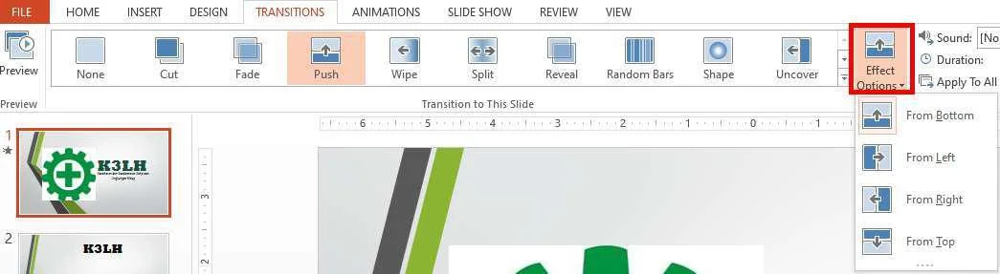
Pilihan arah efek transisi
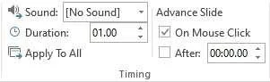
Grup Timing untuk mengatur durasi
| Pengaturan | Fungsi |
|---|---|
| Effect Options | Mengatur arah datangnya efek transisi (kiri, kanan, atas, bawah) |
| Sound | Memilih efek suara yang muncul saat transisi berjalan |
| Duration | Mengatur berapa lama efek transisi berlangsung (dalam detik) |
| Apply to All | Menerapkan pengaturan transisi ke semua slide sekaligus |
Apa itu Animasi?
Animasi adalah efek gerak yang diberikan pada elemen di dalam slide — bisa berupa teks, gambar, atau bentuk — agar muncul atau bergerak dengan cara tertentu saat presentasi berlangsung.
| Transisi | Animasi | |
|---|---|---|
| Efeknya pada... | Perpindahan antar slide | Objek di dalam slide (teks, gambar) |
| Contoh | Slide baru muncul dari kiri | Judul muncul melayang dari atas |
| Letaknya di tab | Transitions | Animations |
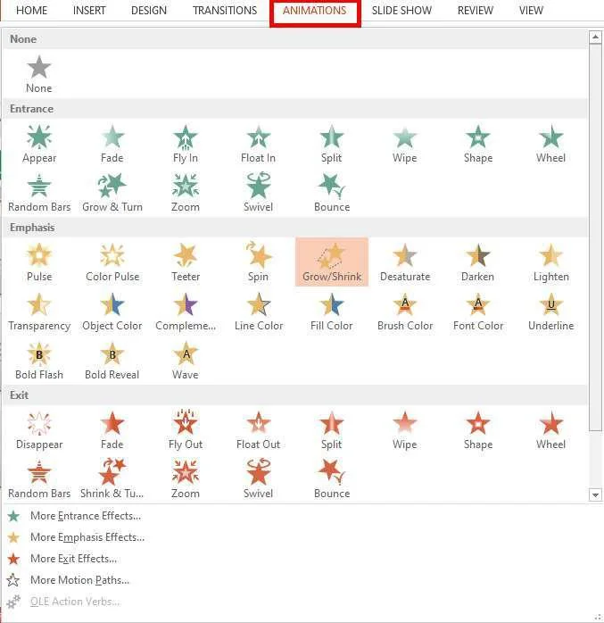
Tampilan tab Animations pada Ribbon
Apa itu Hyperlink?
Hyperlink adalah tautan yang bisa diklik saat presentasi berjalan, untuk membuka file lain, halaman website, atau berpindah ke slide tertentu. Sangat berguna agar presenter tidak perlu mencari-cari file secara manual.
Cara membuat Hyperlink:
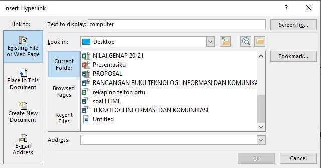
Tampilan kotak dialog Insert Hyperlink
| Jenis | Kegunaannya |
|---|---|
| Existing File or Web Page | Membuka file di komputer atau website di internet |
| Place in This Document | Berpindah ke slide lain dalam file yang sama |
| Create New Document | Membuat dan membuka dokumen baru yang terhubung |
| E-mail Address | Membuka aplikasi email dengan alamat yang sudah diisi |
Apa itu Slide Show? Slide Show adalah fitur untuk menjalankan presentasi dalam mode layar penuh. Melalui fitur ini, kamu bisa mengatur dari slide mana presentasi dimulai dan bagaimana layarnya ditampilkan.
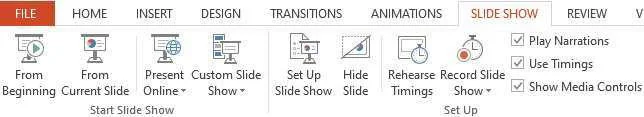
Tampilan tab Slide Show pada Ribbon
Mengatur dari slide mana presentasi akan dimulai:
Digunakan untuk:
| Fitur | Fungsi Utama | Letaknya di Tab |
|---|---|---|
| New Slide | Menambah slide baru | Home |
| Design / Themes | Memperindah tampilan slide dengan tema | Design |
| Transition | Animasi perpindahan antar slide | Transitions |
| Animations | Efek gerak pada objek dalam slide | Animations |
| Hyperlink | Menghubungkan ke file, web, atau slide lain | Insert |
| Slide Show | Menjalankan dan mengatur presentasi | Slide Show |
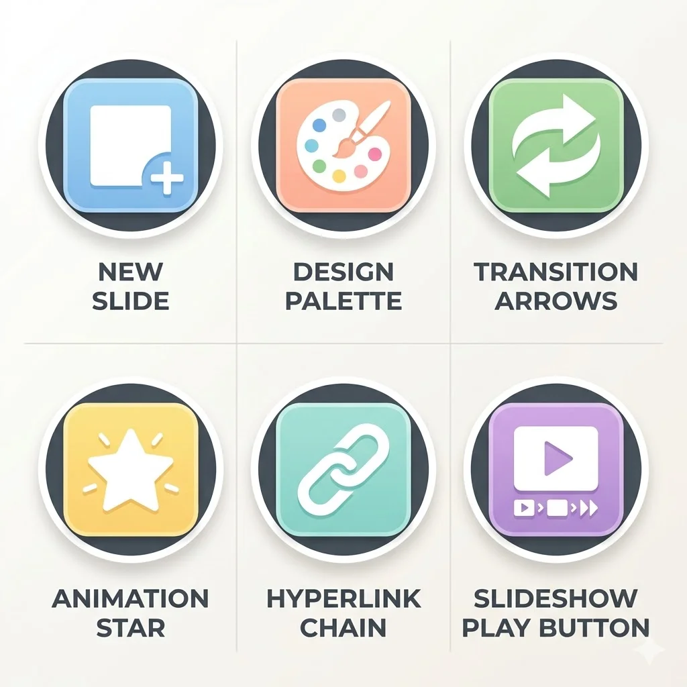
Bagian pada tampilan PowerPoint yang berfungsi sebagai tempat membuat dan mengedit isi slide disebut...
Tuliskan jawabanmu di selembar kertas sebelum melihat jawaban dari gurumu!
Riko ingin membuat teks judulnya "terbang masuk" dari sisi kiri saat slide ditampilkan. Fitur apakah yang harus Riko gunakan?
Tuliskan jawabanmu di selembar kertas sebelum melihat jawaban dari gurumu!
Dina ingin menghubungkan teks "Klik di sini" pada slide-nya agar langsung membuka sebuah website saat diklik. Langkah yang tepat adalah...
Tuliskan jawabanmu di selembar kertas sebelum melihat jawaban dari gurumu!
Apa yang sudah kita pelajari hari ini?
Tugas Praktik:
Buat presentasi dari laporan MS. Word dan MS. Excel yang sudah kamu buat sebelumnya. Terapkan minimal:
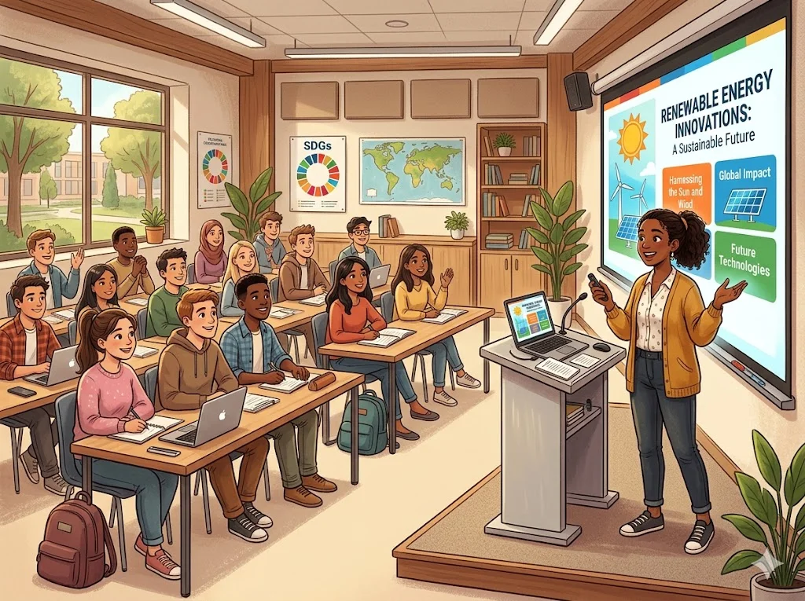